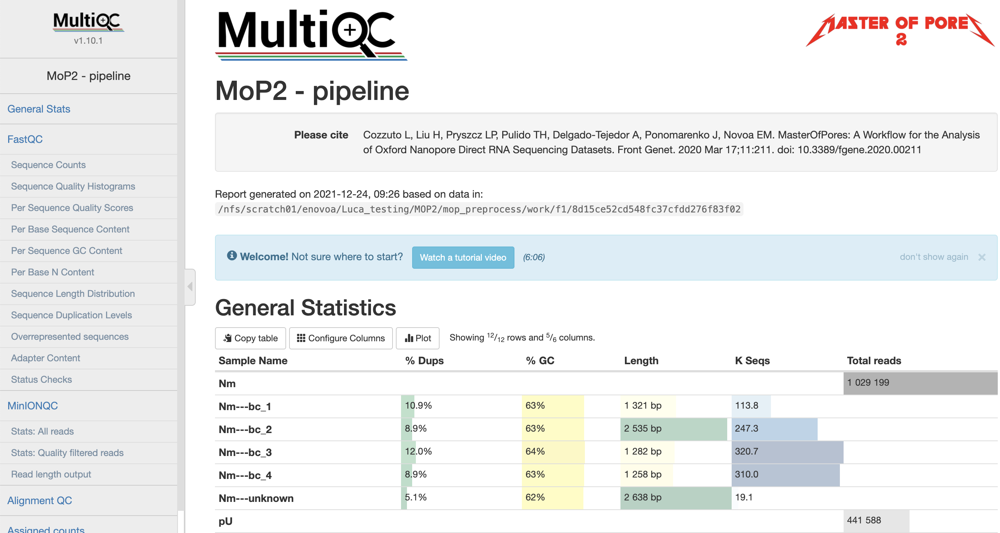

MOP_PREPROCESS
This module takes as input the raw fast5 reads - single or multi - and produces a number of outputs (basecalled fast5, sequences in fastq format, aligned reads in BAM format etc). The pre-processing module is able to perform base-calling, demultiplexing (optional), filtering, quality control, mapping to a genome / transcriptome reference, feature counting, discovery of novel transcripts and it generates a final report of the performance and results of each of the steps performed. It automatically detects the kind of input fast5 file (single or multi sequence).
Note
For using the Apple’s M1 processor you should use the custom profile m1mac and docker.
Input Parameters
Parameter name |
Description |
|---|---|
conffile |
Configuration file produced by the Nanopore instrument. It can be omitted but in that case the user must specify either the guppy parameters “–kit” and “–flowcell” or the custom model via [NAME_tool_opt.tsv] file |
fast5 files |
Path to fast5 input files (single or multi-fast5 files). They should be inside folders that will be used as sample name. [/Path/**/*.fast5]. If empty it will search for fastq files and skip basecalling |
fastq files |
Path to fastq input files. They should be inside folders that will be used as sample name. Must be empty if you want to perform basecalling [/Path/**/*.fastq]. |
reference |
File in fasta format. [Reference_file.fa] |
ref_type |
Specify if the reference is a genome or a transcriptome. [genome / transcriptome] |
annotation |
Annotation file in GTF format. It is optional and needed only in case of mapping to the genome and when interested in gene counts. Can be gzipped. [Annotation_file.gtf]. |
pars_tools |
Parameters of tools. It is ha tab separated file with custom parameters for each tool [NAME_tool_opt.tsv] |
output |
Output folder name. [/Path/to_output_folder] |
qualityqc |
Quality threshold for QC. [5] |
granularity |
indicates the number of input fast5 files analyzed in a single process. |
basecalling |
Tool for basecalling [guppy / NO ] |
GPU |
Allow the pipeline to run with GPU. [OFF / ON] |
demultiplexing |
Tool for demultiplexing algorithm. [deeplexicon / guppy / NO ] |
demulti_fast5 |
If performing demultiplexing generate demultiplexed multifast5 files too. [YES / NO] |
filtering |
Tool for filtering fastq files. [nanofilt / NO] |
mapping |
Tool for mapping reads. [minimap2 / graphmap / graphmap2 / bwa / NO ] |
counting |
Tool for gene or transcripts counts [htseq / nanocount / NO] |
discovery |
Tool for generating novel transcripts. [bambu / NO] |
cram_conv |
Converting bam in cram. [YES / NO] |
subsampling_cram |
Subsampling BAM before CRAM conversion. [YES / NO] |
saveSpace |
Remove intermediate files (beta) [YES / NO] |
Users email for receving the final report when the pipeline is finished. [user_email] |
You can change them by editing the params.config file or using the command line - please, see next section.
How to run the pipeline
Before launching the pipeline, user should decide which containers to use - either docker or singularity [-with-docker / -with-singularity].
Then, to launch the pipeline, please use the following command:
nextflow run mop_preprocess.nf -with-singularity > log.txt
You can run the pipeline in the background adding the nextflow parameter -bg:
nextflow run mop_preprocess.nf -with-singularity -bg > log.txt
You can change the parameters either by changing params.config file or by feeding the parameters via command line:
nextflow run mop_preprocess.nf -with-singularity -bg --output test2 > log.txt
You can specify a different working directory with temporary files:
nextflow run mop_preprocess.nf -with-singularity -bg -w /path/working_directory > log.txt
You can use different profiles specifying the different environments. We have one set up for HPC using the SGE scheduler:
nextflow run mop_preprocess.nf -with-singularity -bg -w /path/working_directory -profile cluster > log.txt
or you can run the pipeline locally:
nextflow run mop_preprocess.nf -with-singularity -bg -w /path/working_directory -profile local > log.txt
Note
In case of errors you can troubleshoot seeing the log file (log.txt) for more details. Furthermore, if more information is needed, you can also find the working directory of the process in the file. Then, access that directory indicated by the error output and check both the .command.log and .command.err files.
Tip
Once the error has been solved or if you change a specific parameter, you can resume the execution with the Netxtlow parameter - resume (only one dash!). If there was an error, the pipeline will resume from the process that had the error and proceed with the rest. If a parameter was changed, only processes affected by this parameter will be re-run.
...
[warm up] executor > crg
[e8/2e64bd] Cached process > baseCalling (RNA081120181_1)
[b2/21f680] Cached process > QC (RNA081120181_1)
[c8/3f5d17] Cached process > mapping (RNA081120181_1)
...
Note
To resume the execution, temporary files generated previously by the pipeline must be kept. Otherwise, pipeline will re-start from the beginning.
Results
Several folders are created by the pipeline within the output directory specified by the output parameter:
fast5_files: Contains the basecalled multifast5 files. Each batch contains 4000 sequences.
fastq_files: Contains one or, in case of demultiplexing, more fastq files.
QC_files: Contains each single QC produced by the pipeline.
alignment: Contains the bam file(s).
cram_files: Contains the cram file(s).
counts: Contains read counts per gene / transcript if counting was performed.
assigned: Contains assignment of each read to a given gene / transcript if counting was performed.
report: Contains the final multiqc report.
assembly: It contains assembled transcripts.
Here an example of a final report:
{kind=link}

Note
Newer versions of guppy automatically separate the reads depending on the quality. You need to disable this via custom options for being used in MoP3. This is also to avoid losing interesting signals since the modified bases have often low qualities. GUPPY 6 seems to require singularity 3.7.0 or higher.
Tip
You can pass via parameter a custom NAME_tool_opt.tsv file with custom guppy options to disable the qscore filtering. Some custom files are already available in this package, like drna_tool_unsplice_guppy6_opt.tsv